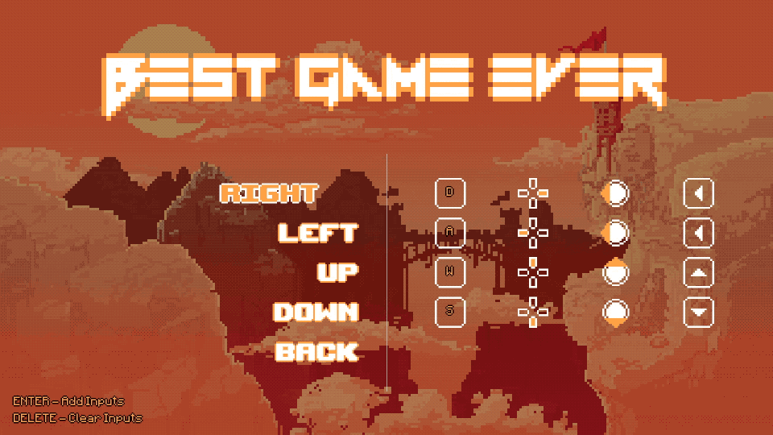
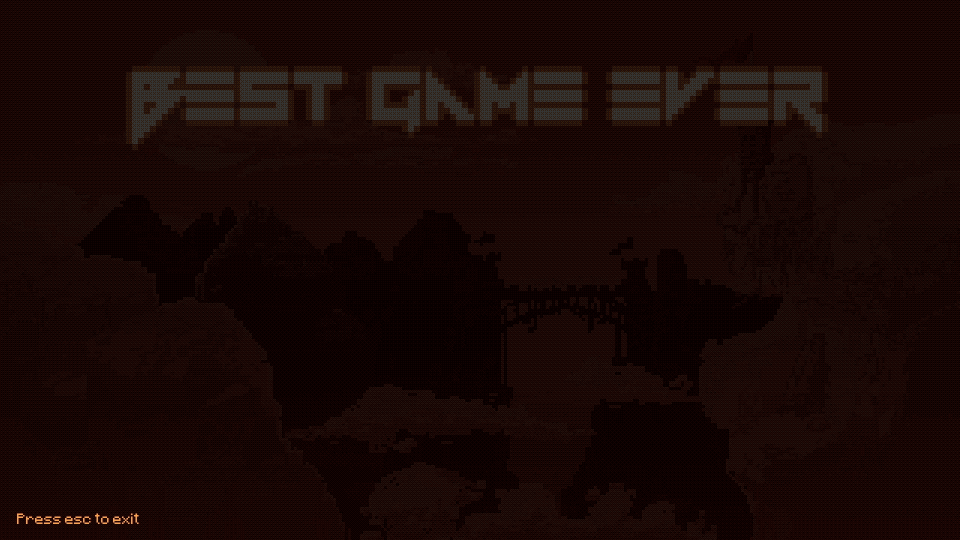
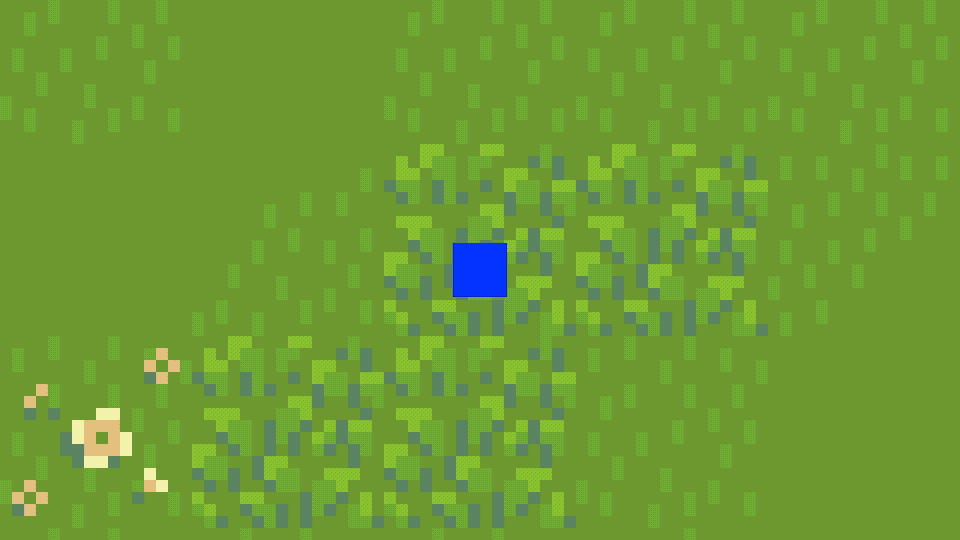
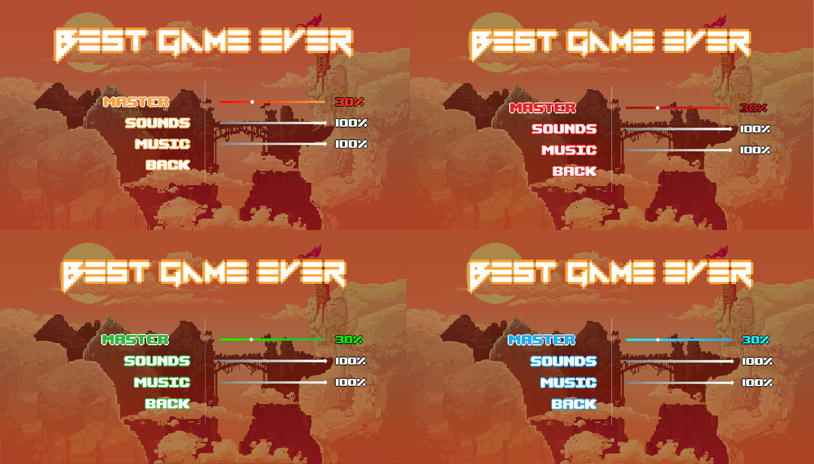

Features¶
This is a menu system for gms 2.3.1+. This menu system allows you to make a title and pause menu in matter of minutes. It has a bunch of different menu elements like sliders, toggles, credits and shifts (multi option select). It also allows you to make a controls menu with one line of code with my InputSystem.
And the best thing is that you don’t have to worry about how big things should be. The system will adjust the size of every element to your window size, even if it’s really small.
But if you want to you can change the size of nearly everyting.
It also has a built in pause system which allows you to pause any game with one line of code.
And it also has automatic saving and loading, even for inputs.
Please note that this menu can only be used with keyboard or gamepad. Mouse and touch controls are not available.
Here is a preview to how it looks by default. But if you change the font and colors it can look very differently.

Controls¶

Credits¶

Menu in action¶

Some color variants¶